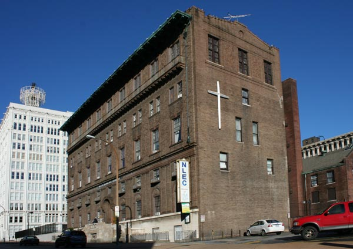
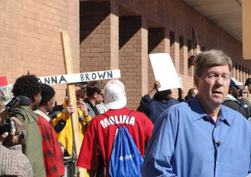

Veterans Coming Home Center
A Division of New Life Evangelistic Center
Humble Beginnings
In 1972 Larry Rice began New Life Evangelistic Center by doing homeless street outreach. Their mission was quite simple; spread the gossple while serving those most in need. The ministry started in a mobile van but quickly grew to something above and beyond human expectations. Many people received Christ as their Lord and Savior. Larry Rice was boldy paving the way for other ministries to serve the homeless. NLEC purchased 1411 Locust in downtown St. Louis which became their headquarters and television station. For decades NLEC has been the forefront activist for homeless rights in the state of Missouri.
 NLEC has consistently been pushing legislators to help the homeless in several different locations throughout Missouri. The ministry has been doing this only through the constant grace and mercy by God our Father. NLEC celebrated their 47th year of ministry in 2019. They continue to make a massive impact on the lives of thousands. Currently NLEC reaches the homeless on the streets of St. Louis, Springfield, Marshfield, New Bloomfield and Potosi. They provide vital resources for those cast out by society. Continued prayers for this ministry are greatly appreciated as we keep reaching the lost and forgotten.
More Than A Day Shelter
On August 11, 2008 NLEC opened the doors of the Veterans Coming Home Center. Originally, our mission was to serve homeless Veterans in the city of Springfield, MO. A fierce battle insued between Larry Rice and city officials as he fought to open an overnight shelter at 806 North Jefferson. The city never conceded and continued to push back at the ministry making it dufficult for them to serve the homeless. The Veterans Coming Home Center became the largest and only day shelter in the city of Springfield. NLEC saw the immense need to open the doors to both Veterans and Civilians. Currently we provide much needed services to anywhere between 150 to 250 people a day. As a division NLEC we continue the work of the ministry here in Springfield. Please continue to pray for the Veterans Coming Home Center as we change lives through the power of the Holy Spirit and support from devout Christians in our community.